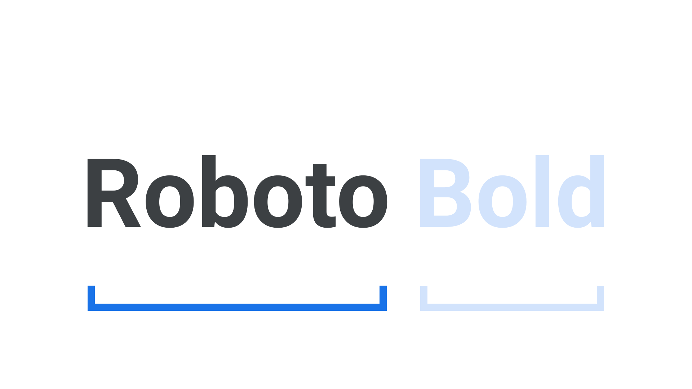

Typeface
By Google Fonts Knowledge contributors · Google Fonts Knowledge.
Original article · Source on GitHub · CC BY-SA 4.0. Text, illustrations and existing credits reproduced from the licensed Knowledge repository. Open Shelf adapted the layout and links; these adaptations are also CC BY-SA 4.0. No endorsement implied.
A typeface is the underlying visual design that can exist in many different typesetting technologies, and a font is one of these implementations. In other words, a typeface is what you see and a font is what you use.
Decades of choosing type via software “font” menus has caused the majority of us to think of “font” and “typeface” as interchangeable terms for the same thing, but the difference is important for anyone serious about typography. Another useful analogy is that a typeface is to a song as a font is to an MP3 file: A font is a manifestation of the typeface/song, but the typeface/song exists outside of the format.

Fonts aren’t limited to the digital domain, either. The term “fonts” has always been used to describe an instance of a particular weight or style of a typeface. To put that into practice, consider that Roboto is a typeface and Roboto Bold is a font.